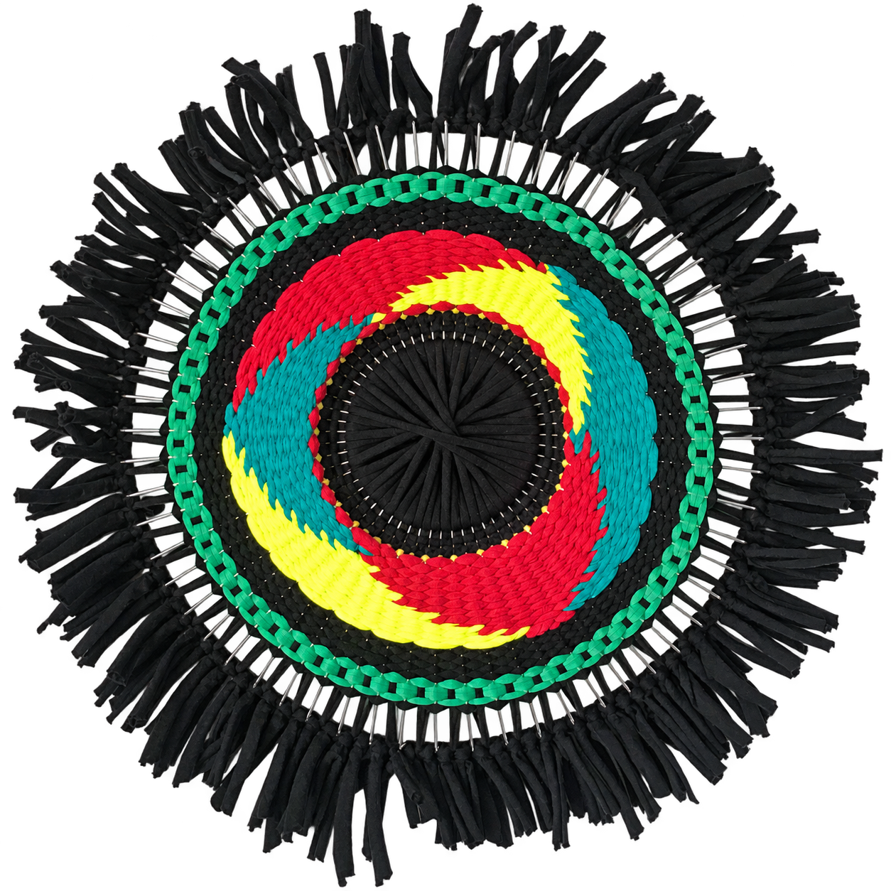
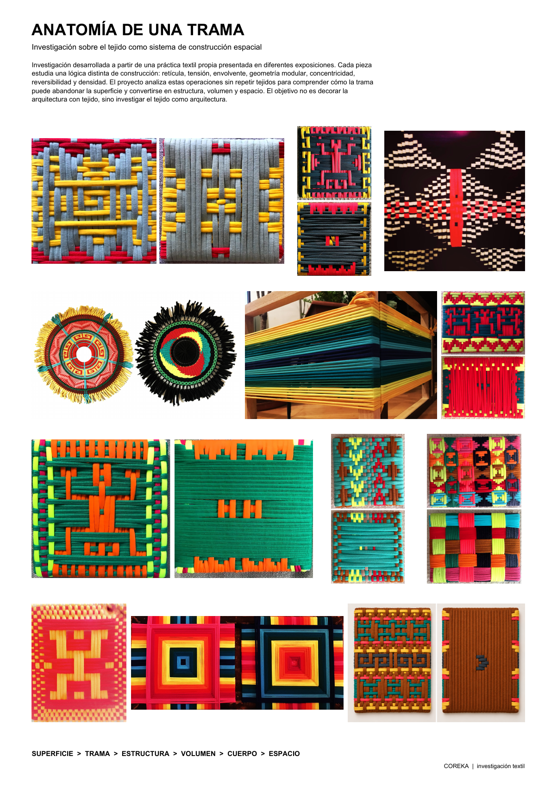
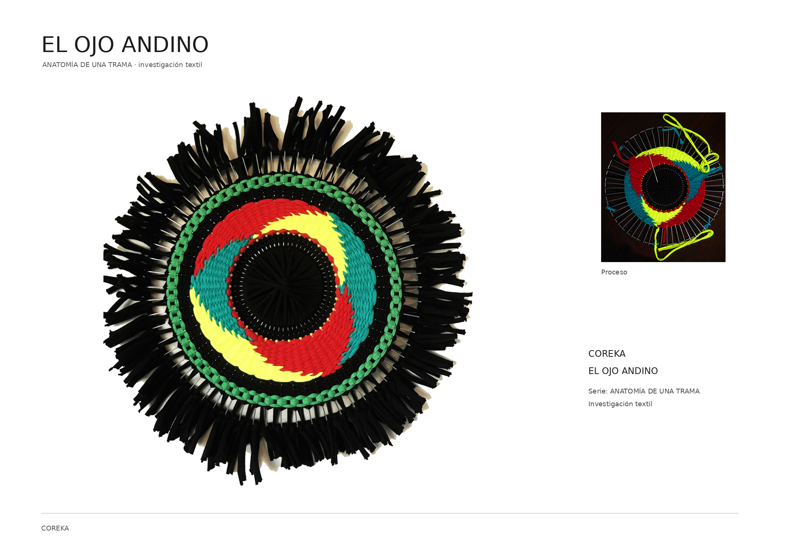
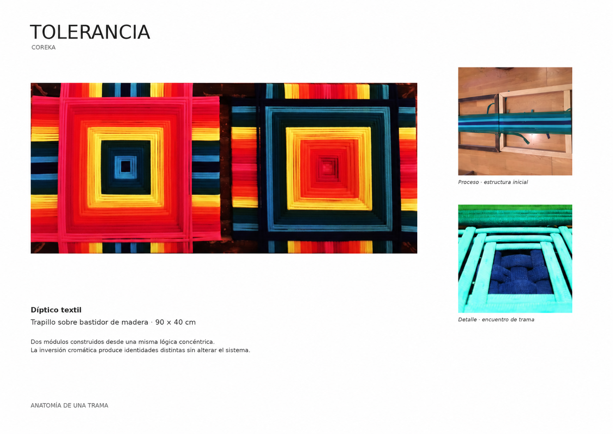
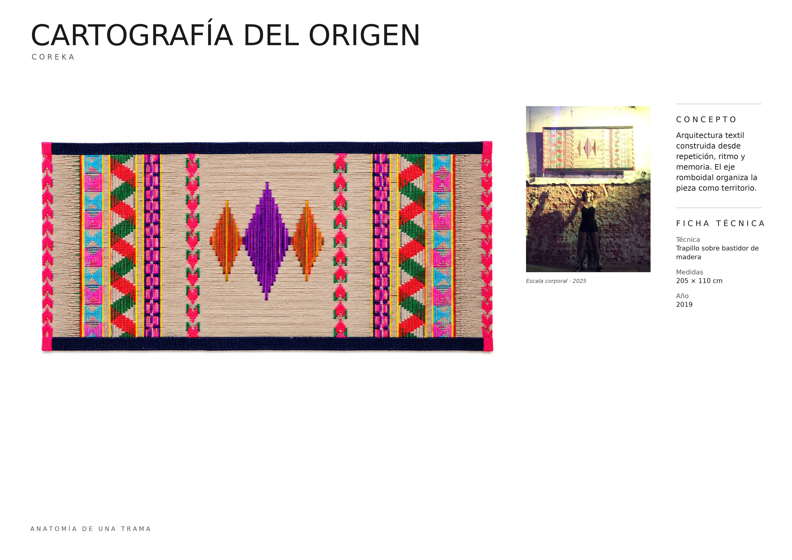
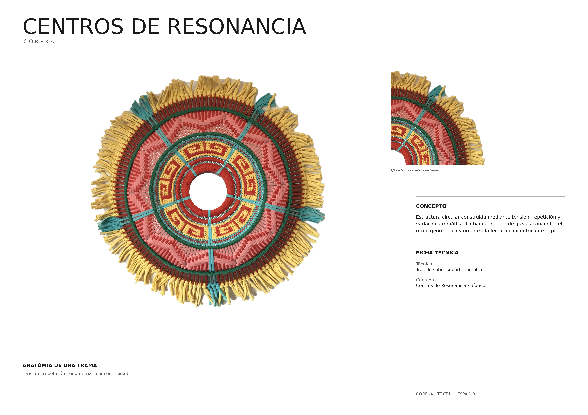
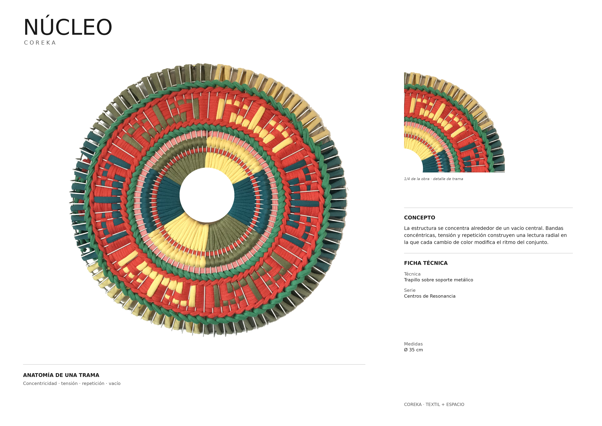
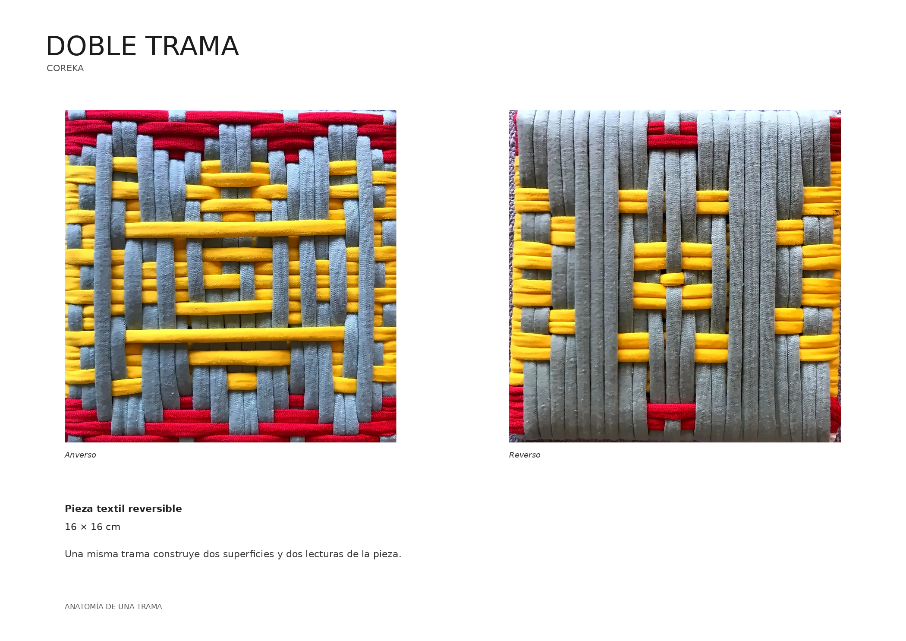
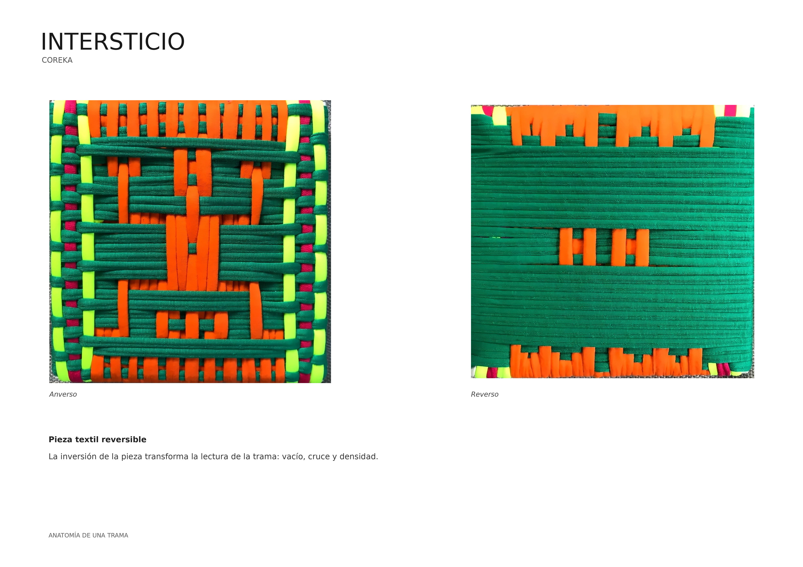
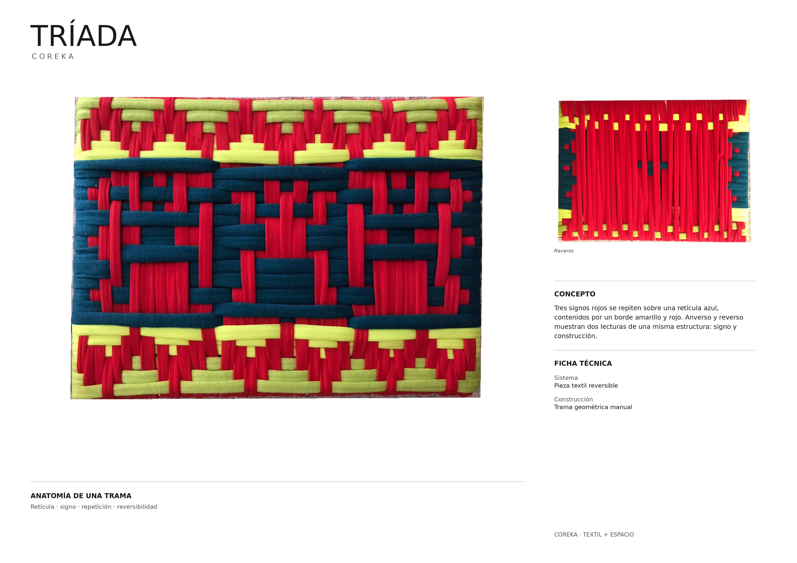

Investigación sobre el tejido como sistema de construcción espacial. Retícula, tensión, envolvente, geometría modular, concentricidad, reversibilidad y densidad: operaciones que llevan la trama de la superficie al volumen y al espacio.

ABRIR PRESENTACIÓN ORIGINAL ↗
El Ojo Andino
Tolerancia
Cartografía del Origen
Centros de Resonancia
Núcleo
Doble Trama
Intersticio
Tríada